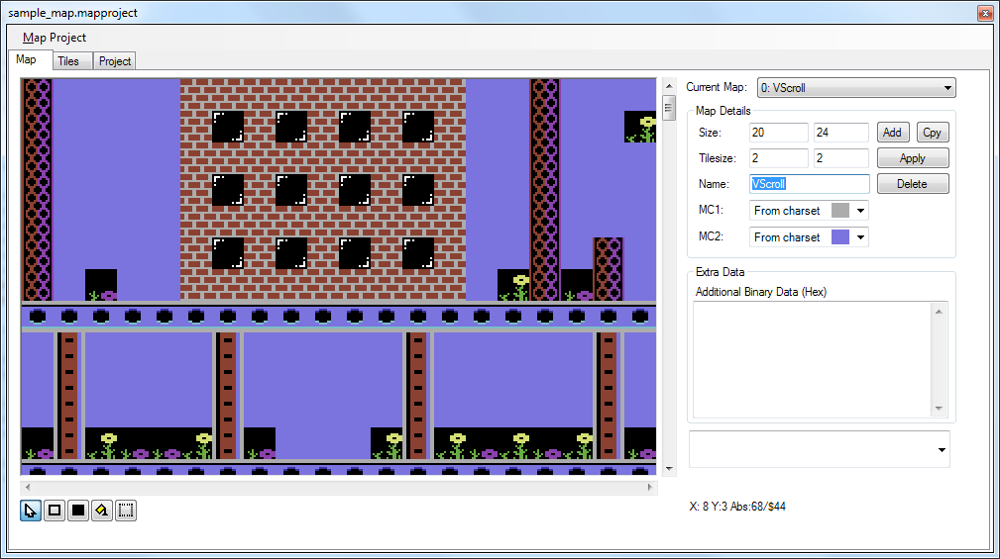
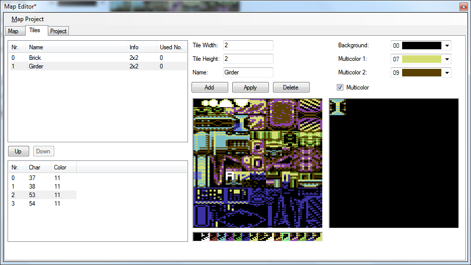
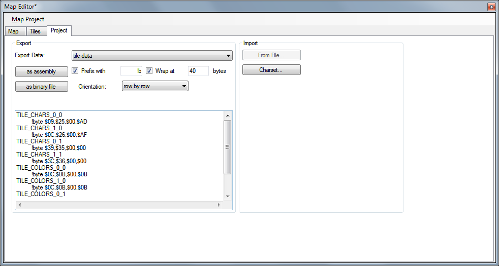

Map Editor - Editor Pane
The map editor supports arbitrary sized maps of individually sized tiles. A tile is a rectangular layout of characters and colors.

Map Pane
Here the actual map editing is done. Choose tiles and paint with left mouse button. Right mouse button fetches the tile under the mouse pointer.
Current Map
Chooses the current map to be edited from all maps in the project.
Add
Adds a new map of the given size and tile size.
Cpy
Creates a copy of the current map.
Apply
Applies the size and tile size to the current selected map.
Delete
Deletes the current map from the project.
MC1
Allows to override the set multi color 1 of the current map from the charset multi color 1.
MC2
Allows to override the set multi color 2 of the current map from the charset multi color 1.
Extra Data
Additional binary data to be added after the tile data. Enter data in hex, semicolons at the line start are comments.
Single Character
Left click sets a single character.
Rectangle
Pushing left click starts a rectangle, move around until the size is fine and release to finally draw the rectangle.
Filled Rectangle
Pushing left click starts a rectangle, move around until the size is fine and release to finally draw the filled rectangle.
Fill
Left click flood fills the character below the cursor with the current char/color.
Selection
Pushing left click starts a selection, move around until the size is fine and release to finalise the selection.
Ctrl-C will copy the selection to the clipboard
Ctrl-V will paste the selection as floating, move the cursor to place the selection. Pressing Escape aborts the placing.
Map Editor - Tiles Pane
On this screen tiles are created and modified. Tiles can have differing sizes. However the map editor only allows putting tiles at fixed step sizes.

Map Editor - Project Pane
On the project pane several import/export functions are available.

Export data as assembly
The chosen data will be exported as assembly.
"Tiles as elements" will export tiles with width and height arrays plus tile character and color data as consecutive arrays.
"Tiles as data" will export tiles with sparse arrays for every character/color cell.
"Map data" will export map data as consecutive arrays in the orientation chosen.
"Tile data, then map data" appends "Tiles as data" and "Map data".
Import from file
Lets you import charpad project files (currently supported version 1.5). Characters above 255 will be ignored!